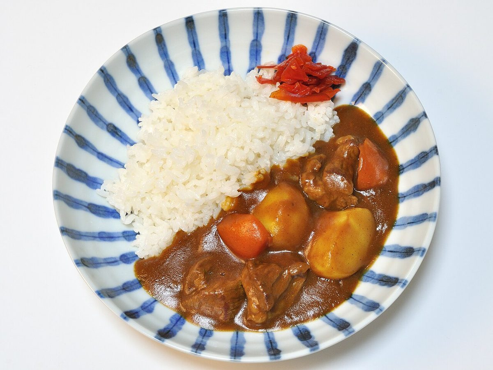
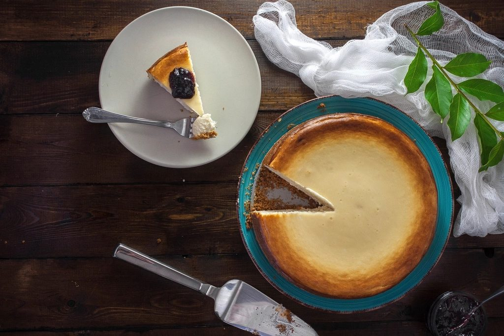
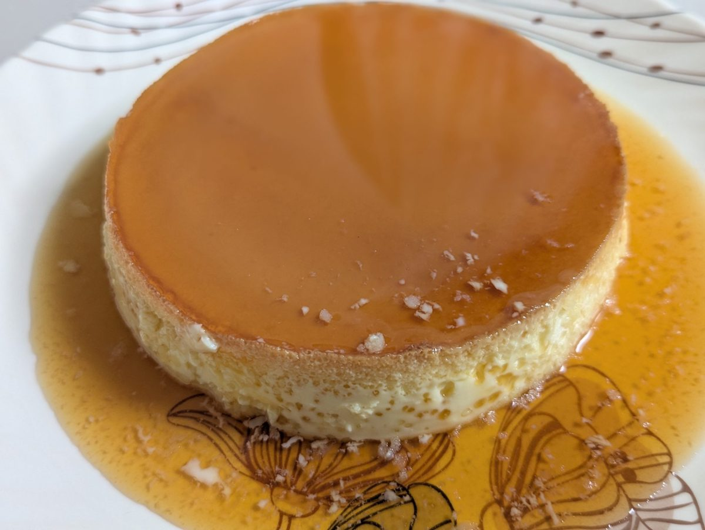
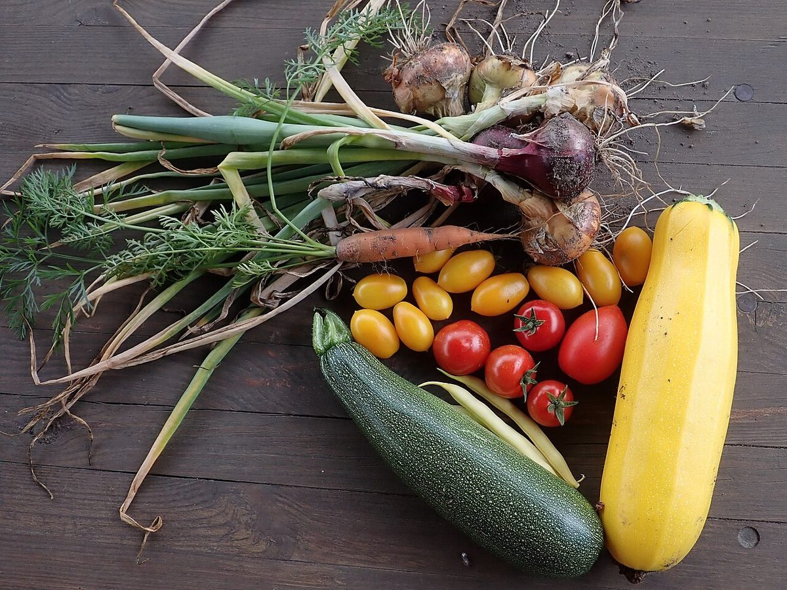
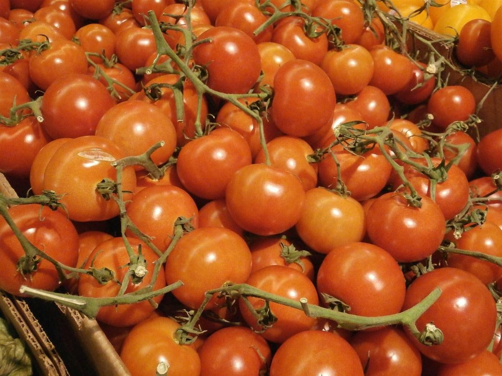
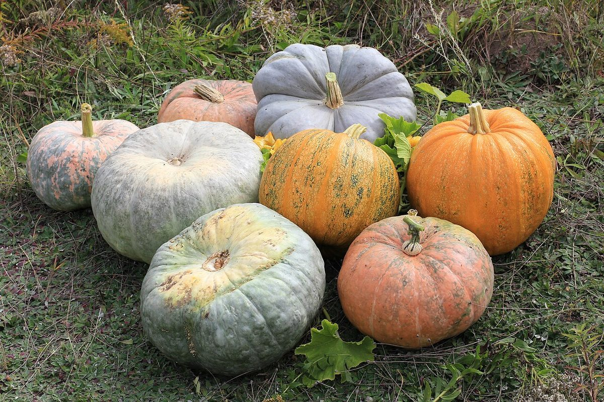
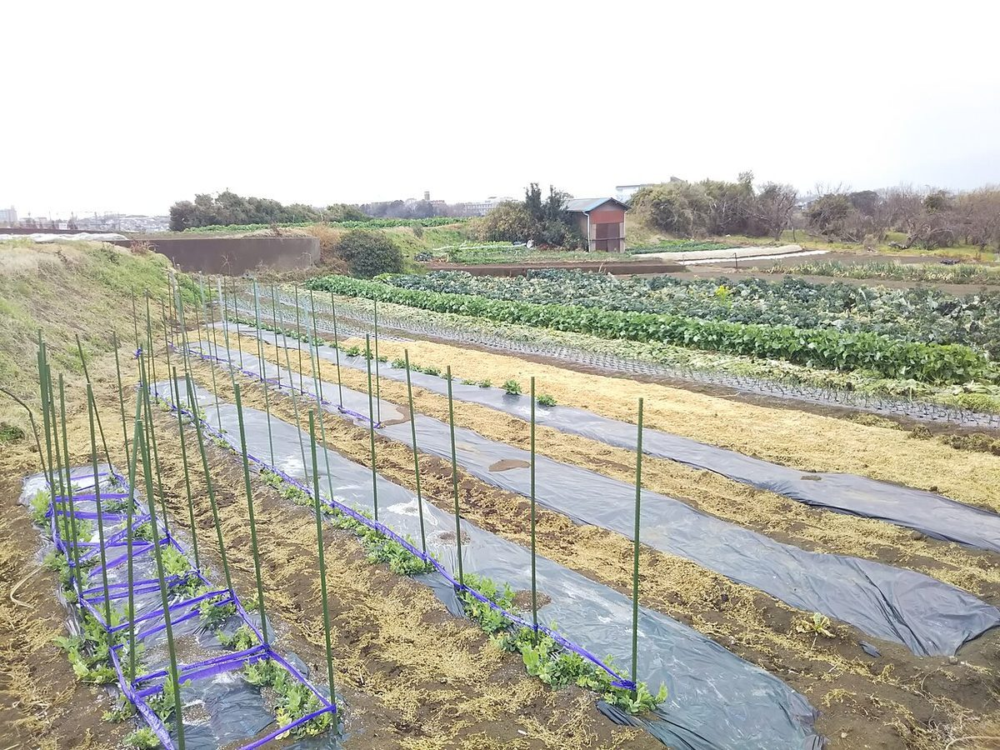
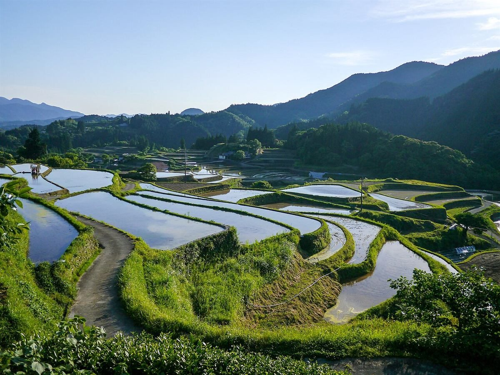
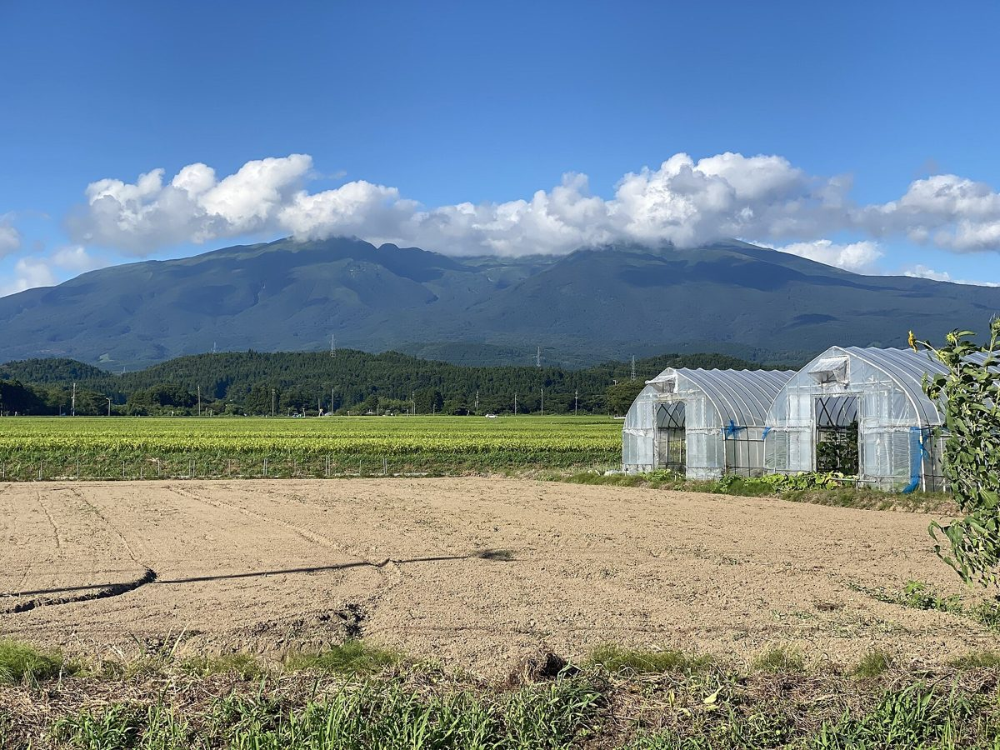
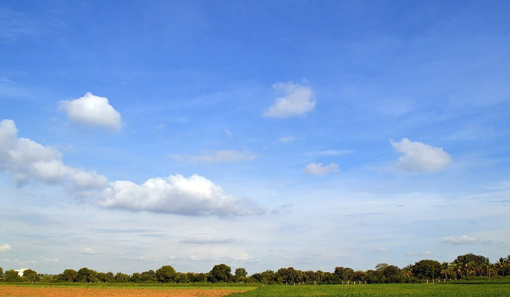

メニュー・お買いもの
野菜をたっぷり使ったランチ(スープカレーなど)やスイーツ、スムージーのほか、新鮮な野菜や加工品の直売もあると、取材記事で紹介されています(2024年時点の情報)。営業時間・価格・最新のメニューは準備中です。お出かけ前にInstagramでご確認ください。






- 営業時間
- 準備中
- 定休日
- 準備中
- 価格
- 準備中
- 電話
- 準備中
写真はフリー素材のイメージです。店舗の実際の様子・商品ではありません(撮影地も唐津とは限りません)。
Astepは、唐津市浜玉町の農業法人「アマノ園芸」の敷地にあるカフェ兼農産物直売所です。コンセプトは「farm to table(農場から食卓へ)」。自社農場の野菜と、近くの農家さんの農産物を使った料理がいただけると紹介されています。

安心・安全な野菜を、農薬をなるべく使わずに育てることを大切にしていると紹介されています。
大きさや形の都合で出荷できない規格外の農産物も積極的に使い、食品ロスを減らし、地域に貢献することを目指しているそうです。
地元グルメブログでは、Agricultural・Safety・Technology・Ecology・Product & Planning の頭文字と紹介されています。お店の公式説明ではなく、参考情報として載せています。




野菜をたっぷり使ったランチ(スープカレーなど)やスイーツ、スムージーのほか、新鮮な野菜や加工品の直売もあると、取材記事で紹介されています(2024年時点の情報)。営業時間・価格・最新のメニューは準備中です。お出かけ前にInstagramでご確認ください。





以下は「イメージ例」として制作側が作成した文章で、実在のお客様の声ではありません。
野菜のおいしさがまっすぐ伝わるお店だったらいいな、と想像しています。直売所でお土産を選ぶ時間も楽しそうです。
畑のとなりでいただくごはんは、きっと格別。テラス席で、ゆっくり過ごしてみたいです。
形がふぞろいな野菜も大切に使うという考え方に共感します。次の休みにお邪魔したいです。
掲載写真はすべてフリー素材(クリエイティブ・コモンズ等)のイメージです。